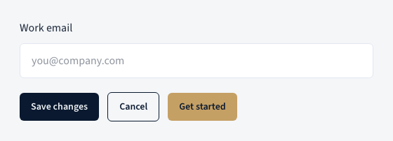
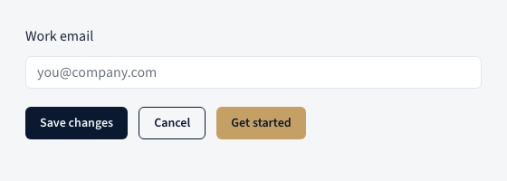
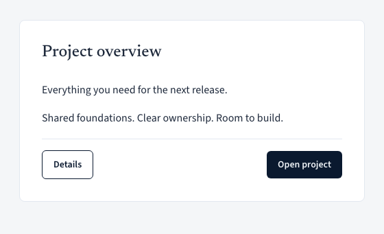
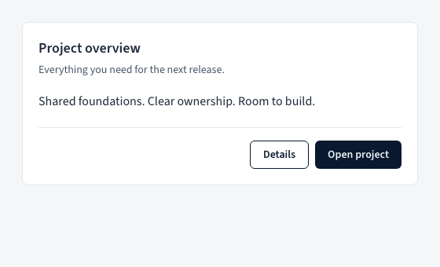
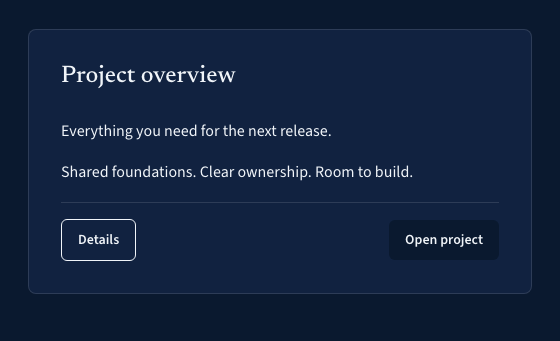
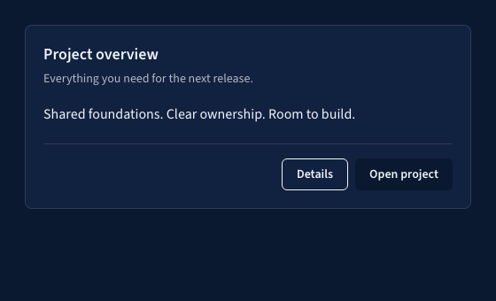
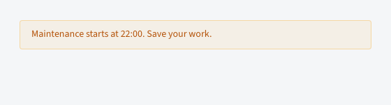
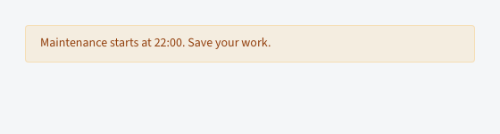

70% / Recommended
Stabilize, then release
Gain: closes known failures and navigation acceptance before tagging.
Cost: delays adoption until fresh remote checks and package smoke pass.
Sapphire UI / v3 → v4
Navy, gold and editorial type stay. v4 makes CSS the shared contract, tightens the UI and gives React, native elements and plain HTML a common foundation.
Implementation is largely complete. Local accessibility passes. Remote CI and visual baseline review are in progress. Documentation acceptance, the release tag and package publication remain owner-gated.
Review snapshot · 21 October 2026 · runtime fix 462d75b plus follow-up verification changes. Screenshots retain the source revisions named below; CI results identify their own revision.
01 / Visible polish
Default v4 controls align at 36px on fine pointers. Button widths and icon footprints are preserved; coarse pointers get a minimum 44px target. Compactness should not cost usability.


Before / v3 React
import { Button } from "@kongmy-dev/sapphire-ui";
<Button variant="accent" icon="add">
Add project
</Button>After / v4 React
import { Button } from "@kongmy-dev/sapphire-ui/button";
import { Plus } from "lucide-react";
<Button variant="brand"
icon={<Plus className="sp-icon" aria-hidden="true" />}>
Add project
</Button>What changes for you: accent → brand, an explicit import and SVG icons in place of font glyph strings. Lucide is an app choice, not a new runtime dependency of Sapphire.
02 / Content hierarchy
Default card insets move from 32px to 20px. Headers group titles and descriptions closely, operational titles use the sans family, and footer actions gather at the trailing edge. Page and editorial headings keep their serif.


Before / plain HTML
<div class="card card-static">
<h3 class="t-heading">Project overview</h3>
<p>Everything for the next release.</p>
</div>After / plain HTML
<div class="sp-card">
<div class="sp-card-header">
<h3>Project overview</h3>
<p>Everything for the next release.</p>
</div>
</div>The screenshots use the same React Card/Header/Body/Footer composition. The HTML snippets show the separate CSS contract; they are abbreviated examples, not the screenshot fixture.
03 / Tokens & themes
The navy and gold palette survives the rewrite. v4 uses shadcn-compatible token names and scoped light-dark() values. An explicitly themed section can keep its own scheme inside a page using the other.


Before / CSS
.project-link {
color: var(--color-accent-text);
background: var(--color-card-bg);
}After / CSS
.project-link {
color: var(--brand-text);
background: var(--card);
}
/* Theme scope: <section data-theme="dark"> */Watch the semantic change: v4 --accent is a quiet interactive tint. Brand gold is --brand; use --brand-text for gold text on light surfaces. Tailwind apps import tailwind.css instead of the old theme.css.
04 / Runtime ownership
v3 already had native elements, and some React clients wrapped them. In v4, React renders the shared CSS directly; native entrypoints register browser behaviour independently. Plain HTML can use the CSS without either runtime.


Before / native registration
import "@kongmy-dev/sapphire-ui/style.css";
import "@kongmy-dev/sapphire-ui/elements";
<sapphire-banner variant="warning">
Maintenance starts at 22:00.
</sapphire-banner>After / native registration
import "@kongmy-dev/sapphire-ui/foundations.css";
import "@kongmy-dev/sapphire-ui/banner.css";
import "@kongmy-dev/sapphire-ui/elements/banner";
<sapphire-banner variant="warning">
Maintenance starts at 22:00.
</sapphire-banner>The tag stays. The registration becomes selective. Server imports are safe, but native constructor exports are undefined on the server; construct instances in a browser.
05 / Distribution
v4 is ESM-only, with exact component exports and zero runtime dependencies. React, React DOM, Radix UI and resizable panels are optional peers; CSS-only and native consumers need none of them.
sapphire.cssAll shared component styles, plus foundations.
foundations.css + button.cssA vendored component owns its local stylesheet.
Before / v3 package
import { Button, Card }
from "@kongmy-dev/sapphire-ui";
import "@kongmy-dev/sapphire-ui/style.css";After / v4 mixed ownership
import { Button } from "@kongmy-dev/sapphire-ui/button";
import "@kongmy-dev/sapphire-ui/foundations.css";
import "@kongmy-dev/sapphire-ui/button.css";
import { Card } from "./components/ui/card";Registry URLs are versioned: frozen /r/{name}.json assets remain; v4 uses /r/v4/{name}.json with 33 items. The registry base installs foundations, then each vendored component owns its CSS. Avoid the full stylesheet in a mixed app.
bunx --bun shadcn@4.22.0 init \
https://design.kongmy.dev/r/v4/base.json --yes
# components.json registries:
# "@sapphire": "https://design.kongmy.dev/r/v4/{name}.json"
bunx --bun shadcn@4.22.0 add @sapphire/buttonBefore npm publication, the repository smoke uses a local tarball override. This is the target install contract, not a claim that a fresh public v4 install works today.
06 / Adoption
The migration CLI previews literal HTML, Astro, JSX/TSX and CSS edits. It reports ambiguous or dynamic usage rather than silently treating it as complete. Application interaction and visual checks still belong to the app.
Before / v3 storage hook
import { useLocalStorage }
from "@kongmy-dev/sapphire-ui";
const [name, setName] =
useLocalStorage("name", "");After / v4 explicit parser
import { useLocalStorage } from
"@kongmy-dev/sapphire-ui/hooks/use-local-storage";
const [name, setName] = useLocalStorage("name", "", value => {
if (typeof value !== "string") throw new Error("Invalid name");
return value;
});Download the concise migration guide for AI agents (.md) · Steps, ownership rules, breaking APIs and acceptance checks.
bun run migrate /path/to/app --check
bun run migrate /path/to/appRun from the library checkout. Review every file:line: manual report. Also check removed CVA helpers, ThemeToggle.asChild, string icons and CommonJS usage. If your scope points at GitHub Packages in .npmrc, remove that registry override for the npm-only v4 release.
07 / Value created
The visible polish is only part of the change. These are capabilities of the implemented architecture; app delivery speed and bundle savings still need consumer measurements.
| Change | Value created | What it unlocks / example |
|---|---|---|
| Shared CSS contract | React, native and HTML use the same tokens, parts and variants. Styling fixes have one owner. | A static content page and a React dashboard can share cards and controls without adopting the same runtime. |
| Selective imports, optional peers | Apps choose the clients and peer packages they use; the library has zero runtime dependencies. | A CSS-only landing page can use the design system without installing React or Radix. Measure its final payload separately. |
| Explicit CSS ownership | Package and vendored components can coexist without loading two complete style systems. | Customize one local Card while continuing to receive package updates for Button. Local copies still need reviewed fixes. |
| Scoped semantic tokens | Brand colour and quiet interactive tint have separate meanings; theme scopes stay explicit. | Place a dark pricing panel inside a light page, with shared component styles in both. |
| Migration scan and enforced contracts | Known rewrites are repeatable; uncertain edits are reported. API, visual, accessibility and dependency gates make drift visible. | An AI agent can preview a bounded migration, resolve manual reports and hand over exact test evidence. App acceptance remains required. |
The tradeoff: v4 makes imports, CSS ownership and data parsing explicit. That costs migration work now and makes future changes easier to locate and verify. No measured app performance gain is claimed.
Release review / evidence over optimism
The architecture, clients, package and migration tooling are in place. The remaining work is release stabilization and acceptance, not another redesign.
| Area | Status | Evidence / remaining work |
|---|---|---|
| CSS, React & native | Implemented | Shared tokens and styles; six native entries; local plan records lifecycle and equivalence coverage. |
| Package & registry | Implemented | 156 exports, four optional peers, 33 registry items; local packed-consumer evidence is recorded in the plan. |
| Fresh local review | Passed | bun run gate --force: 18 tasks, 923 tests, zero cache hits at 462d75b. All 1,626 local browser checks pass at that revision. This page passes axe and layout/link checks across 12 browser/theme/viewport combinations. |
| Remote quality & visuals | Verification open | Draft PR CI at 462d75b: quality failed on HoverCard test diagnostics; a count-based assertion passes 120 local repeats. Six button pins are owner-approved and updated; eight plain-field pin changes await review. |
| Remote accessibility | Running | Fresh Linux CI is running at 462d75b. The earlier three WebKit dark failures came from bare buttons inheriting light text over a grey native background. Shared control colours are now paired; all 1,626 local browser checks and five focused Linux WebKit cases pass. A minimal Linux fixture reproduces the old contrast failure and passes with the fix. Full remote proof remains open. |
| Documentation acceptance | Awaiting review | P8 reopened after removal of left navigation. Local sidebar and command-search restoration is recorded; approval is still open. |
| Tag & publication | Not released | No v4 tag or release in the local and remote inventories. npm latest remains 3.0.0. Published v4 consumer smoke remains. |
Decision weights below are judgment, not measured probabilities. I would finish the release gates before adopting v4 broadly.
Traceability
Real Chromium captures, not mockups: v3 component source at tag v3.0.0 (d387138) and v4 source at a99658f. Matching content, 560px frames, device scale 1, light and dark themes. Both use the same locally bundled fonts and the current checkout’s toolchain. This isolates component changes; it is not an archival capture of the historical production build or a performance benchmark.
Images show resting states. They do not establish focus, touch targets, runtime equivalence, assistive-technology behaviour or release readiness. Displayed images scale to fit; open a screenshot for its original size. Code examples omit unrelated setup.
Historical plan totals are recorded evidence, not reruns performed for this page. Remote state is a dated snapshot, not a live monitor. The comparison is published separately from the catalogue. Documentation acceptance, release tagging and npm publication remain owner-gated.